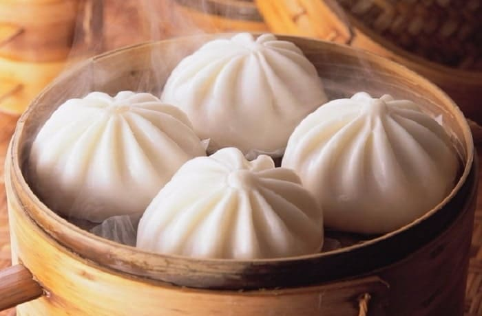
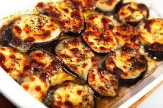

Baos japoneses
Esta bella receta es al estilo japonés, y te va a apasionar si te gustan las empenadas, ya que estas son similares, pero al estilo asiático
Saber más

Barenjenas a la napo
Si no sos vegano, te gustan las milanesas a la napolitana, y te gustan las berenjenas, esta reseta te encantará.
Saber más
Pastel de carne
Esta es una exelente receta para aquellos amantes de la carne, y del pure de papa casero.
esto es un relleno
Saber más